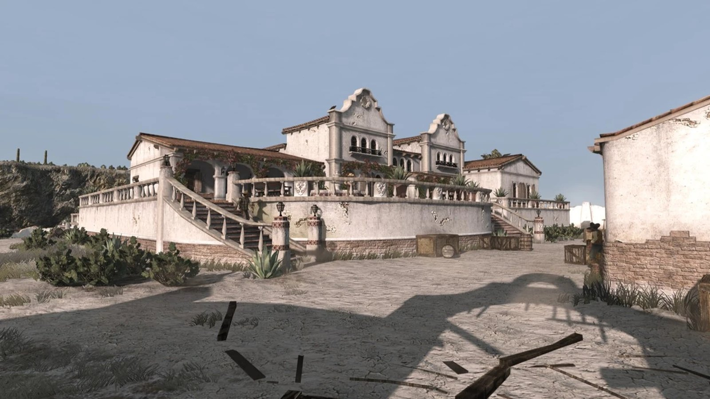
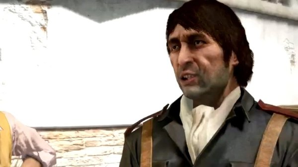
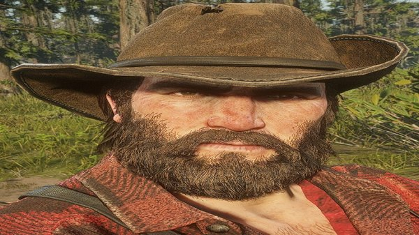
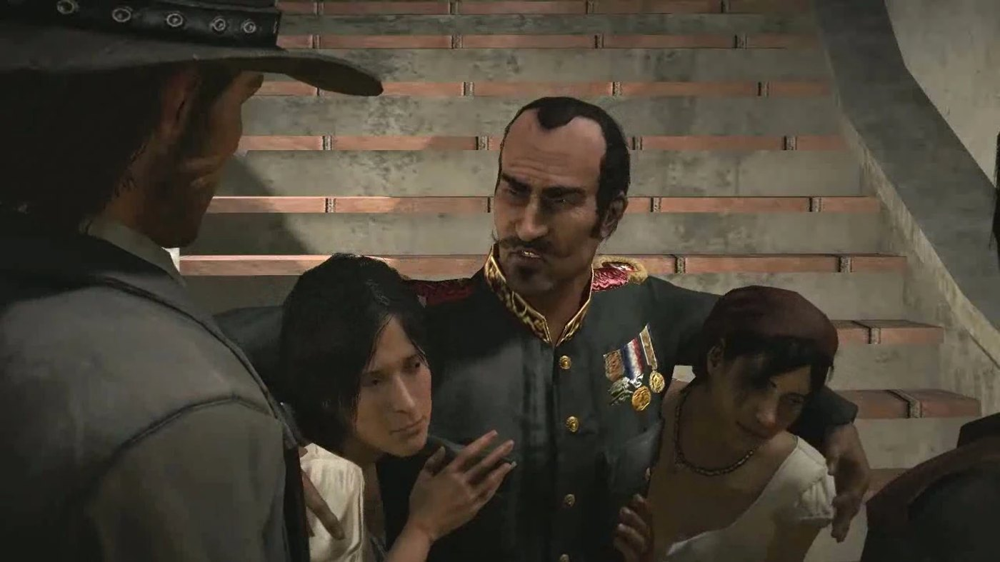

Character · Nuevo Paraiso
Agustin Allende
Agustin Allende is a colonel in the Mexican Army and the governor of Nuevo Paraiso in Red Dead Redemption. He runs the province from his residence at Escalera and puts down the rebellion led by Abraham Reyes.
He is also the man sheltering Bill Williamson and Javier Escuella, which is what obliges John Marston to work for him.
- Affiliation
- Mexican Army
- Role
- Colonel, governor of Nuevo Paraiso
- Based at
- Escalera
- Status
- Killed in 1911
- Nationality
- Mexican
- Games
- Red Dead Redemption
Biography
Governor of Nuevo Paraiso
Allende governs the province under military rule. His soldiers conscript villagers, seize property and execute suspected rebels. He holds court at Escalera, where his officers report to him, and his authority over Nuevo Paraiso is effectively absolute.
Sheltering the two outlaws
Bill Williamson and Javier Escuella cross into Mexico and are taken under Allende's protection, working as hired guns for his regime. When John Marston arrives looking for them, Allende neither hands them over nor admits they are there. Instead he sets John to work against the rebels, through his officer Captain Vincente de Santa.
Reputation
Allende is shown as vain and self-indulgent. He presents the repression as a service to the country, keeps young women at his residence, and treats the war as an inconvenience to his comfort. His soldiers fear him, and the villages he taxes have nothing good to say about him.
Relationships

Vincente de Santa
His captain, and the officer who handles the army's dealings with John Marston.

Bill Williamson
The outlaw he shelters in exchange for service to the regime.

Abraham Reyes
The revolutionary whose uprising ends his rule over the province.

John Marston
Works for him under false pretences, then turns on him.
Fate
John eventually breaks with the army and joins the rebels. Escalera falls to the uprising in 1911, and Allende is killed during the collapse, in the same sequence that leaves Bill Williamson dead. Abraham Reyes takes the province immediately afterwards.
Behind the scenes
Agustin Allende appears in Red Dead Redemption (2010), in the Nuevo Paraiso chapter of the story.
Gallery
